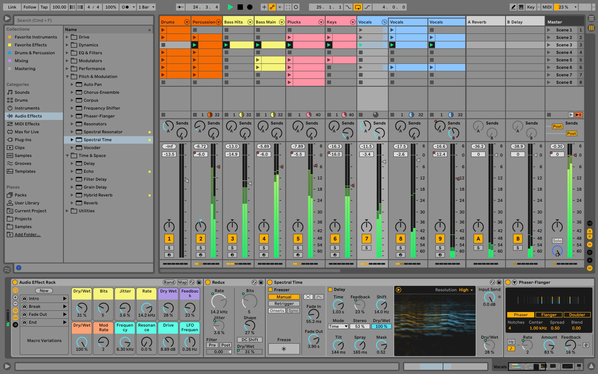
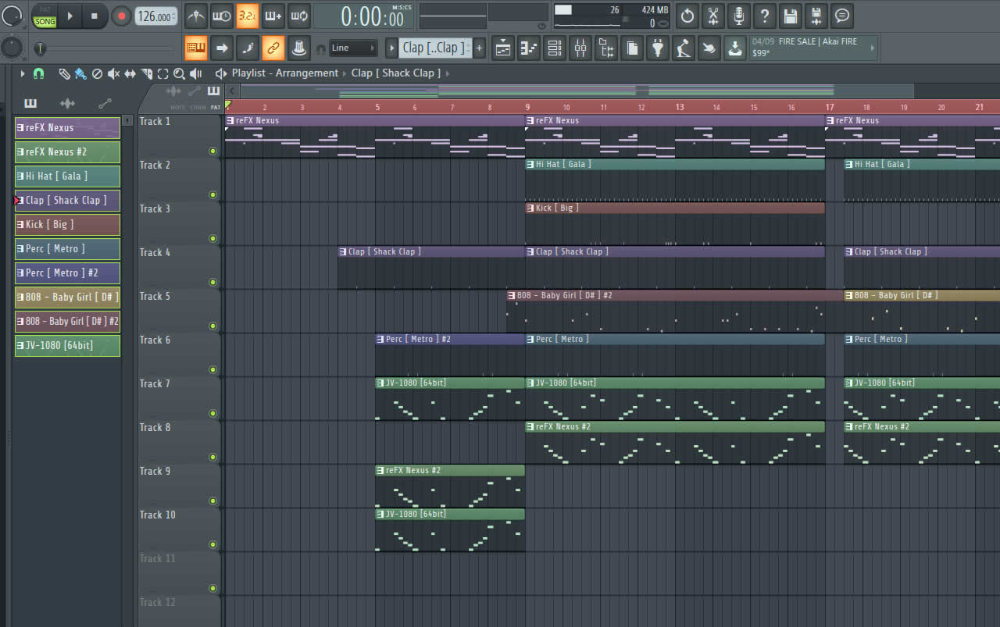

DAWs

Digital Audio Workstation (ou, de forma abreviada, DAW) — em português: "estação de trabalho de áudio digital" — é um sequenciador que tem a finalidade de gravar, editar e tocar áudio digital. Originalmente, os DAWs eram máquinas que não faziam uso de fita magnética para tratar áudio, sendo baseadas em microprocessadores, como o Synclavier. DAWs modernos evoluíram para o formato de softwares rodando em computadores com interfaces de áudio.
Normalmente os DAWs permitem operar as trilhas como um mixer, onde as características individuais de cada trilha podem ser ajustadas de forma independente, podendo também serem agrupadas. Plugins podem ser adicionados às trilhas; esses são principalmente da plataforma VST, desenvolvida pela Steinberg em 1996, e que acabou tornando-se um padrão da indústria.
O suporte a MIDI nos DAWs também é considerado padrão, tanto para gravação a partir de um controlador MIDI externo, quanto para a edição, quanto para o playback através de instrumentos virtuais, geralmente na plataforma VSTi da Steinberg. A maioria dos DAWs oferece algum editor para as notas e eventos MIDI, e alguns DAWs chegam a trazer visualizações de partitura para as trilhas MIDI
Fonte: Wikipedia
Sugestões de DAWs
Ableton Live
Há tempos Ableton Live é considerado um dos melhores softwares de edição de áudio. O software oferece ferramentas de grande qualidade para edições e produção de áudio, bem como para o apoio de apresentações ao vivo. Nele, o usuário encontra uma vasta gama de funcionalidades e uma enorme facilidade de uso.
Ableton Live trabalha com duas visualizações principais que se enquadram perfeitamente nas necessidades de diferentes tipos de usuários e etapas de produção. O Session View e o Arragement View
Em Session View, os recursos do programa são todos direcionados para auxiliar o músico ou usuário amador na transformação do software em uma extensão para seus instrumentos. Em cada grade, por exemplo, é possível adicionar uma gravação, um loop, um arquivo MIDI, efeitos sonoros e até mesmo uma música inteira, reordenando-os da forma adequada sempre que necessário. Nesse modo, o usuário consegue executar tudo ao vivo, com praticidade e qualidade, estando livre para misturar os ingredientes que quiser.
No Arragement View, o usuário encontra um ambiente desenvolvido para atender todas as suas necessidades de edição e produção musical. Nele, estão recursos como gravação, arranjo, sequenciamento MIDI, inserção de efeitos, e muitos outros. As produções criadas a partir do ambiente “Session View” podem ser também gravadas através do modo “Arragement View”, e posteriormente editadas, recriadas e produzidas da forma que o usuário desejar.
Fonte: Techtudo.com.br
FL Studio
FL Studio é o programa ideal para quem deseja começar a produzir sua própria música, em casa. Recheado de funções aliadas a uma interface muito prática, tem tudo o que você precisa para começar a criar agora mesmo suas faixas musicais.
Por meio dos Patterns, crie loops ou levadas de bateria e instrumentos diversos, como sintetizadores ou uma linha de baixo. Para facilitar a vida na hora de criar melodias ou acordes, a função Piano Roll é a indicada, pois utiliza as notas de um piano/teclado na criação dessas linhas harmônicas.
Além disso, o programa vem com diversos efeitos muito legais, como reverb, echo, delay e wah wah. Ele também conta com uma biblioteca grande de sintetizadores, baixos e até guitarras virtuais!
Caso você utilize outro programa para produzir, como o Pro Tools, a função ReWire integra os dois softwares, abrindo uma grande gama de possibilidades na hora de compor.
Fonte: Techtudo.com.br